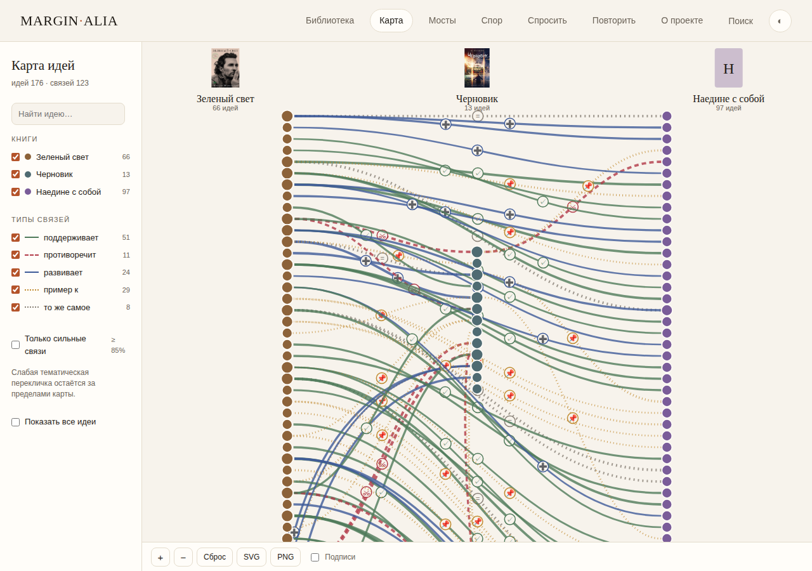
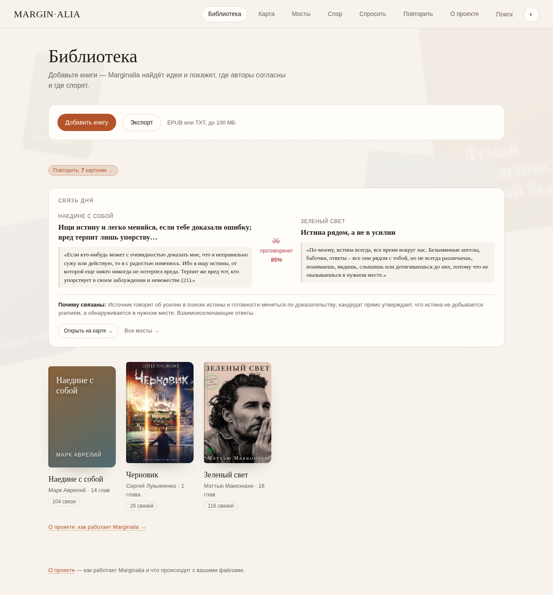
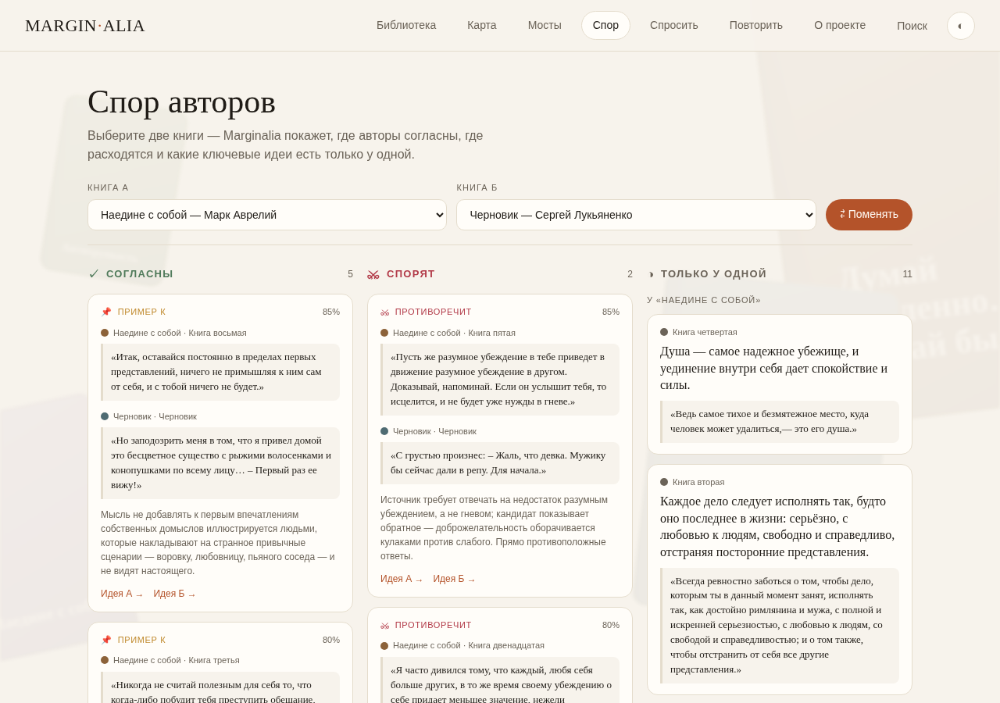
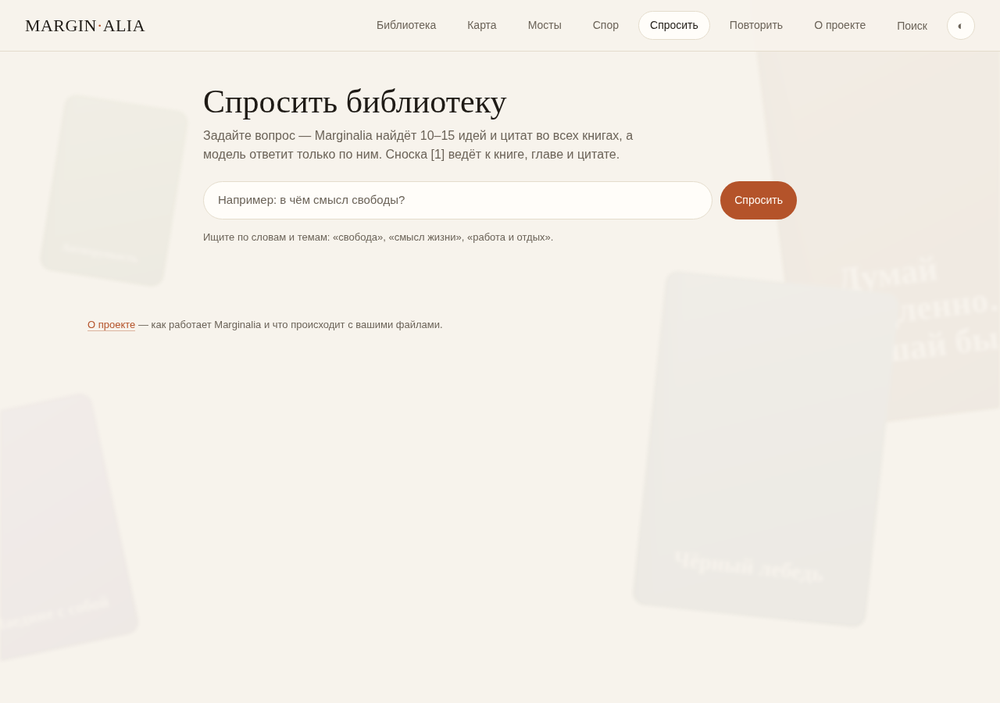
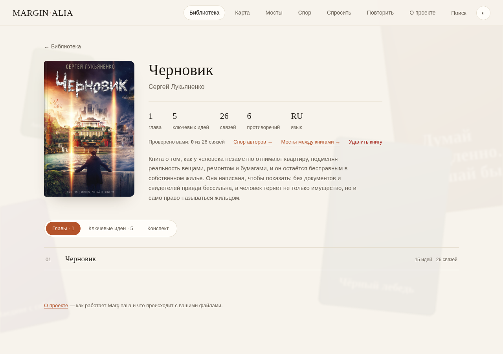

Marginalia: a map of ideas from your books

In one sentence: Marginalia reads your books, splits them into ideas, and links ideas across books; every idea must carry a real quote, checked against the book, so the map has no invented thoughts.
The problem
A normal e-reader keeps pages, and notes keep your thoughts, but neither sees the links between books. Marginalia answers the question “what does this book say about the same thing I read last month?”. An AI that summarises books can invent ideas, so here each idea is a short thought plus a quote, and an idea without a matching quote is thrown away.
How it works
The class AI model (DeepSeek-V4.1-Flash, on the ISSAI server) proposes the ideas of each chapter, short titles, the type of each link (supports, contradicts, extends, example of, same idea) with a confidence, the key ideas and a summary. Everything else is plain Python: reading the EPUB, finding link candidates by shared words, search, the map and the review cards. Books, ideas and links stay in one local SQLite file; the page is one HTML file with no external libraries.
Results
Are the quotes real? For 6 chapters of two books, every quote the model proposed was compared with the book text letter by letter.
| Ideas proposed by the model | Quote exact | Quote near (≥ 90%) | Dropped |
|---|---|---|---|
| 69 (6 chapters, 2 books) | 67 | 1 | 1 |
67 of 69 quotes were exact copies of the book, and the one invented quote was dropped before it reached the map. The quote check does not check the type of a link; a hand check of the links is the next step. The demo library has 3 books, 381 ideas and 123 links.
Screens




Run it yourself
You need only Python 3.10 or newer: no packages, no build.
git clone https://github.com/ibragimkhojanazarov2-hash/Knoweldge-graph-AI.git cd Knoweldge-graph-AI python3 app/server.py 8000 --db demo/library-demo.db
Then open http://localhost:8000. Library, map, bridges, search and review work offline; “Ask” needs an AI model.
Limitations and ethics
The quote check covers 6 chapters only. Link candidates are found by shared words, so a link without shared words can be missed. Only EPUB and TXT, one user, one local database. Books are not in this repository; the demo library keeps only the first paragraphs of each chapter.
Cite
@misc{marginalia2026,
title = {Marginalia: a map of ideas from your books},
author = {FRP 2026 student},
note = {FRP 2026, ISSAI, Nazarbayev University},
year = {2026}
}